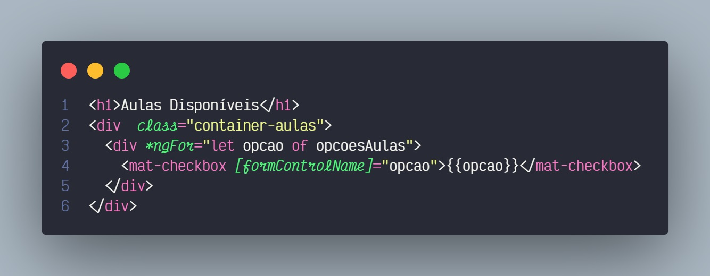
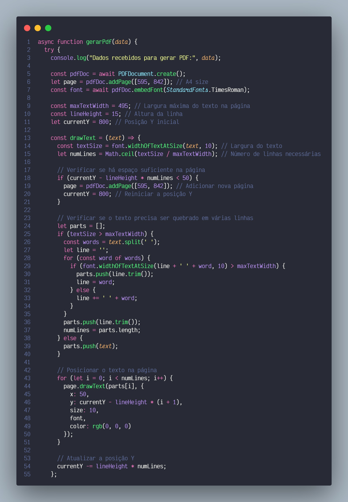

Introdução
Durante o semestre, atuei junto ao "Spaço Najla de Danças", que oferece aulas de dança para pessoas a partir de 2 anos 6 meses a preços populares na região do jardim Danfer na zona leste de São Paulo, com ojetivo de informatizar o processo de inscrição dos alunos, para facilitar a organização de documentos, diminuir o uso de papel e otimizar o tempo gasto com atividades burocráticas
Objetivo
O projeto visa informatizar o processo de inscrição dos alunos para o Spaço Najla de Danças, um local que oferece aulas de dança a preços populares para a comunidade. O objetivo é substituir o sistema de inscrição manual, por um sistema digital, facilitando a organização e o acesso às fichas de inscrição, tanto para a administração da escola, quanto para os alunos, pais e responsáveis, possibilitando a economia de uso de papel e contribuindo para a sustentabilidade. O sistema permitirá que os alunos e/ou pais preencham e enviem as fichas de inscrição online, armazenando todos os dados de maneira segura e acessível via Email e/ou google Drive.
Desenvolvimento Frontend
Foi escolhido Angular por sua arquitetura baseada em componentes, que facilita a organização e a reutilização do código. Escrito em TypeScript, Angular proporciona uma melhor tipagem estática, reduzindo erros em tempo de execução. A CLI do Angular acelera o desenvolvimento com ferramentas integradas para criação de componentes e otimização de builds. Além disso, o suporte a injeção de dependências promove um código mais modular e testável. Recursos como data binding bidirecional e roteamento integrado simplificam a criação de SPAs (Single Page Applications). A grande comunidade e o ecossistema amplo garantem suporte contínuo e uma variedade de bibliotecas e recursos adicionais.
Diretiva NgFor para criação dinâmica de aulas cadastradas.
Desenvolvimento Backend
Node.js com Express foi escolhido para o backend devido ao seu desempenho e escalabilidade. Node.js utiliza um modelo de execução assíncrono e baseado em eventos, o que o torna ideal para aplicações em tempo real e de alta concorrência. Express é um framework minimalista e flexível que simplifica a criação de APIs robustas e rápidas. A integração com o ecossistema npm permite acessar uma vasta gama de bibliotecas e módulos, acelerando o desenvolvimento. Além disso, a utilização de JavaScript tanto no frontend quanto no backend promove um ambiente de desenvolvimento unificado, facilitando a reutilização de código.
Função para geração de um arquivo PDF com dimensionamento automático da folha A4.
Tecnologias Utilizadas
Frontend
Backend
Conclusão
A experiência adquirida neste projeto foi ótima para meu desenvolvimento como profissional de tecnologia e como cidadã. Enfrentei e superei desafios, adquiri novas habilidades e vi em primeira mão o impacto positivo que a tecnologia pode ter na comunidade. Estou confiante de que essas experiências contribuirão significativamente para minha carreira futura e para minha capacidade de contribuir de forma significativa para a sociedade através da tecnologia.